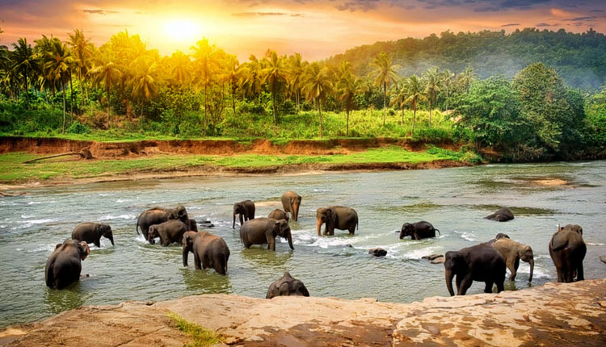
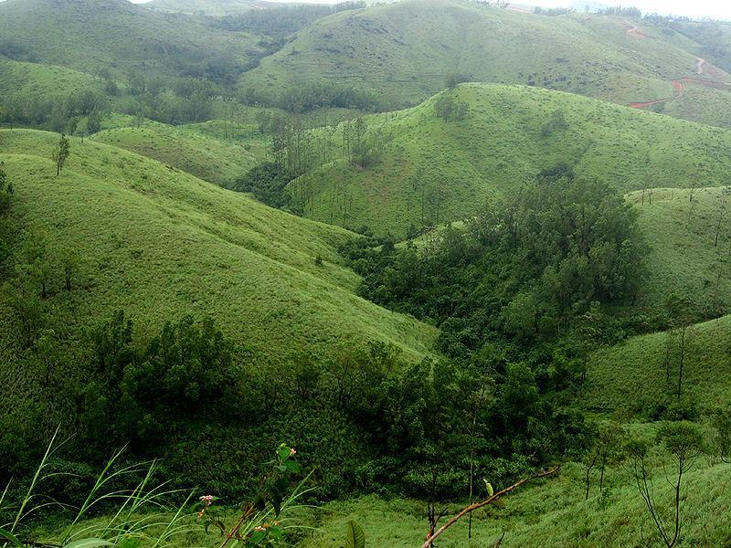

Idukki is a district in the Indian state of Kerala.[4][5] It was constituted on 26 January 1972, by taking Peerumade, Udumbanchola, Devikulam taluks from Kottayam district and Thodupuzha taluk of Ernakulam district.[6] Its division was previously headquartered at Kottayam city, but moved to Kuyilimala near Painavu and Cheruthoni in June 1976.
Idukki district lies amid the Cardamom Hills of Western Ghats in Kerala.
Though it is the second-largest district in the region in terms of area, it has the lowest population density among the districts of Kerala. There are only two municipalities in the district and the urban population is comparatively much lower than the rural population.
River
The 145 kilometres
(90 mi) long Chalakudy River, originates in the Anaimalai mountains of the Western Ghats and
flows through the Vazhachal Forest toward the Arabian Sea. The river starts off smooth but becomes more turbulent as it nears Athirapilly. At Athirappilly Falls, the water surges around big rocks and cascades down in
three separate plumes. Below the falls, the river remains turbulent for about 1 kilometre (0.62 mi) until it reaches Kannamkuzhi,from where it calms and flows smooth until reaching the dam at Thumpoormuzhi
Wildlife
Forest wildlife in the area includes the Indian elephant, Bengal tiger, Indian leopard, gaur, sambar, and lion-tailed macaque. The unique 180 metres (590 ft) elevation riparian forest in the Athirappilly-Vazhachal area is the only location where all
four South Indian species of hornbills — the great hornbill (the state bird of Kerala), Malabar pied hornbill, Malabar grey hornbill, and the Indian grey hornbill are found living together.Plantations in the area contain teak, bamboo, and eucalyptus.
Environmentalists claim that Athirappilly is a one-of its-kind riparian ecosystem in Kerala. V.S. Vijayan, Chairman of the Kerala State Biodiversity Board and former Director of the Salim Ali Centre for Ornithology and Natural History (SACON), Coimbatore,
has been quoted in Down to Earth magazine as affirming that the Vazhachal forest division is the second most biodiverse area in the State. The International Bird Association has declared it an ‘Important Bird Area' and the Asian Nature Conservation
Foundation has recommended that the area should be declared a sanctuary or a national park, he points out. The Wildlife Trust of India says it represents one of India's best elephant conservation efforts. "Any disruption to this fragile ecosystem will
spell disaster," says Vijayan. The river provides habitat for 85 species of fresh water fishes. Among these, 35 are endemic species.